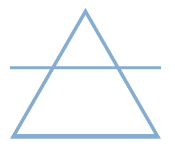
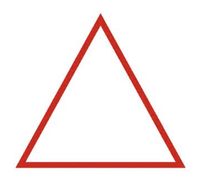
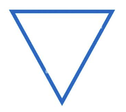

The Earth element is represented by the signs Taurus, Virgo, and
Capricorn. Earth signs provide a sense of stability, security, practicality,
and they are rooted in the present and focused on the physical world.
These signs turn ideas and dreams into concrete, real world forms.
They are also known for their pragmatic approach to life, their ability
to assess situations realistically, and their focus on practical
solutions. Earth signs are reliable, loyal, patient, persistent,
and are willing to put time and effort required to achieve their goals.

The Air element is represented by Gemini, Libra, and Aquarius. Air
signs are naturally curious and enjoy exploring new ideas and concepts.
They are natural communicators and thrive on connecting with others,
and excel at expressing themselves. These signs are adaptable and
flexible, able to adjust to different situations and perspectives.
Due to their intellectual nature, they can be seen as detached or
unemotional. Air signs tend to rely on logic and reason, especially
when making decisions.

The Fire element is represented by Aries, Leo, and Sagittarius.
Fire signs are known for their intense emotions and passions. The
fire element fuels creativity and self expression, as a result,
fire signs often have artistic talents. They are typically courageous
and confident, unafraid to take risks and stand up for what they
believe. They possess a natural sense of leadership and enjoy taking
the initiative. Fire signs are often warm, friendly, and optimistic,
bringing light and positive energy to those around them. They also
have a zest for life and a love for adventure. Fire signs can be
impulsive and tend to act without thinking at times. It is important
that they learn to approach their temper and enthusiasm with caution.

The Water element represents Cancer, Scorpio, and Pisces. They are
known to experience emotions intensely. They possess strong intuition
and can often sense things without needing logical explanation.
These signs are highly sensitive to their environment and the emotions
of others. They are also naturally compassionate and nurturing.
Water signs can have emotional vulnerability, moodiness, and difficulty
setting boundaries.